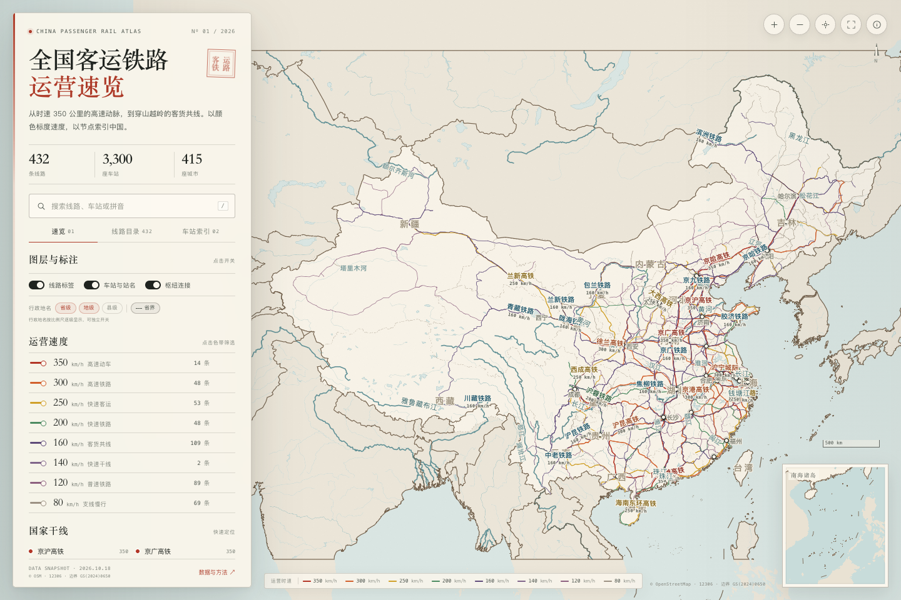

全国客运铁路 · 运营速度地图
全国客运铁路
运营速览
从时速 350 公里的高速动脉，到穿山越岭的客货共线。432 条客运线路、3300 座办理客运的车站，以颜色标度最高运营速度，可按线路、车站和速度筛选查看。
432条客运线路
3,300座车站
415座城市

地图内容
线路与速度
432 条具名客运线路，按最高运营速度分色；支持按 ≥350、≥300、≥250、≥200、≥160、≥120 km/h 筛选。
车站与枢纽
3300 座 12306 办客站全部落图，可按线路查看完整经行站点；多线交汇站以枢纽节点连接。
线路档案
点击线路可查看速度等级、线路类型、沿线全部办客站、关联城市与线路说明。
自然水系
长江、黄河、珠江、黑龙江等主要河系与主要湖泊，采用 1:10m 河网与宽河段水面轮廓。
行政边界
国界、省界、海岸线与南海诸岛采用天地图国家标准矢量地图 GS(2024)0650；仅保留陆上边界描边。
离线单文件
地图本身是一个单文件 HTML，下载后可离线打开；不需要 API Key 或外部 CDN。
关于数据
线路与车站数据来自中国铁路 12306 图定列车信息（2026-10-18 快照）与 OpenStreetMap（2026-09-24 快照）；自然水系采用 Natural Earth 1:10m 与 OpenStreetMap 水面数据；行政边界采用天地图国家标准矢量地图，审图号 GS(2024)0650。地图用于学习、研究与展示，不作为国界、测绘、工程设计或出行依据。